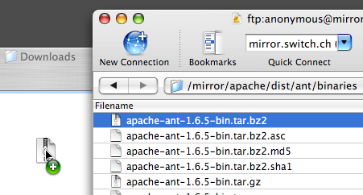
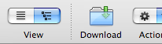
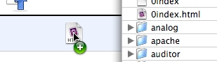

-
Fent doble clic.
Fer doble clic en un fitxer de la finestra del navegador
descarregarà el fitxer en la ubicació per defecte,
configurada al menú Cyberduck →
Preferències → Transferències.
-
Descarregar arrossegant i deixant anar.
Arrossegueu els fitxers o carpetes a una ubicació desitjada dins del
Finder.

-
A través de la barra d'eines
Personalitzeu-vos la barra d'eines a través del menú Visualitza → Personalitza la barra d'eines... per a afegir el botó de descàrrega a la configuració per defecte.

-
A través del menú de descàrrega.
Seleccioneu Fitxer → Descarrega o feu ctrl-clic en el fitxer del navegador i a continuació Baixa en el menú contextual.
-
Com poso un fitxer a la cua de transferències?
Arrossegueu el fitxer de la finestra de navagació a la finestra de transferències.
